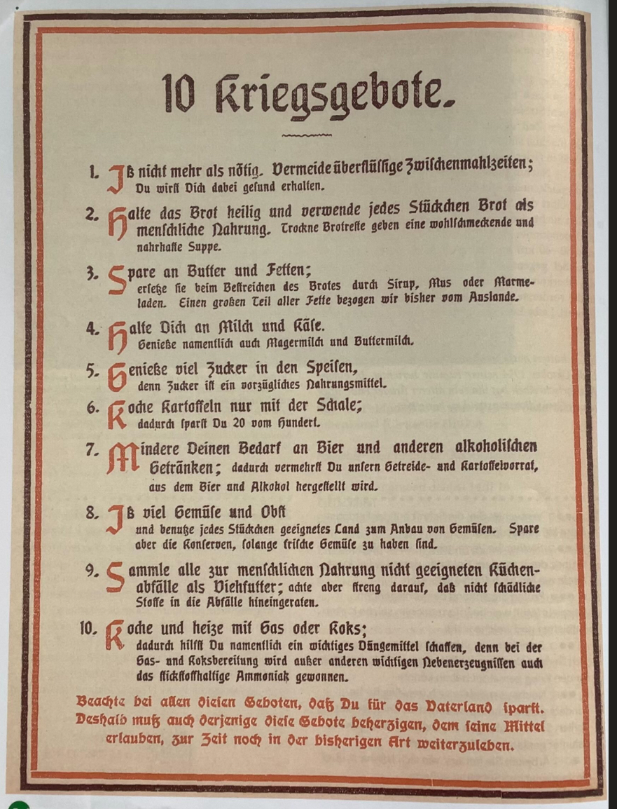

Erster Weltkrieg
Til Riley & King Justin
Militärischer Verlauf & Westfront

Der Krieg begann 1914 als Bewegungskrieg, doch bereits nach kurzer Zeit kam es zum Stillstand der militärischen Operationen. Der deutsche Schlieffen-Plan, der eine schnelle Entscheidung durch den Einmarsch in das neutrale Belgien vorsah, scheiterte an der Marne. Dies führte zum Übergang in den statischen Stellungskrieg.
Die Perspektive des Arthur Ruhl (1915)
Der US-amerikanische Kriegsberichterstatter Arthur Ruhl lieferte detaillierte Schilderungen der Kämpfe, unter anderem von der Halbinsel Gallipoli. Seine Berichte verdeutlichen die radikale Veränderung der Kriegsführung: Soldaten lebten in extrem engen Schützengräben unter permanenter Gefährdung durch Bomben, Artilleriebeschuss und Maschinengewehrfeuer. Ruhl hielt die brutale Realität fest, in der die technisierte Verteidigung jeden Angriffsversuch in ein blutiges Abschlachten verwandelte.
Die Materialschlacht
An der Westfront entwickelten sich massive Abnutzungsschlachten. Besonders die Festung Verdun (1916) wurde zum Symbol für das sinnlose Sterben, bei dem Hunderttausende Soldaten ohne nennenswerten Geländegewinn geopfert wurden. Insgesamt standen ca. 65 Millionen Menschen unter Waffen, von denen etwa 8,5 Millionen starben.
Industrialisierter Krieg
Der Erste Weltkrieg gilt als der erste umfassend industrialisierte Krieg der Geschichte. Die Front wurde zum Bestimmungsort für den Einsatz modernster Massenvernichtungswaffen.
- Waffentechnik: Einsatz von Giftgas (erstmals massiv bei Ypern 1915), Flammenwerfern, Flugzeugen und Zeppelinen.
- U-Boot-Krieg: Deutschland setzte auf den uneingeschränkten U-Boot-Krieg, um die britische Seeblockade zu brechen. Dies traf auch neutrale Schiffe und die Handelsschifffahrt.
- Tanks: Ab 1916/17 kamen erstmals Panzer (Tanks) zum Einsatz, um die Befestigungen des Stellungskrieges zu überwinden.
- Artillerie: Das "Trommelfeuer" dominierte das Schlachtfeld und verwandelte weite Landstriche in unbewohnbare Zonen.
Heimatfront & Totale Mobilisierung

Das Hindenburg-Programm (1916)
In einer Denkschrift der Obersten Heeresleitung (OHL) forderte Generalfeldmarschall Paul von Hindenburg im Oktober 1916 die totale Ausrichtung des Landes auf den Sieg. Er betonte, dass der Krieg nur gewonnen werden könne, wenn die Ernährung des Volkes sichergestellt werde und gleichzeitig alles, was die Industrie und der Acker hergeben, lediglich für die Förderung des Krieges ausgenutzt werde. Dieses "Höchstmaß an Leistungen" setzte voraus, dass alle anderen Rücksichten im Kampf um das "Sein oder Nichtsein des Staates" zurücktreten mussten.

Die "Gebote" zur Sicherung der Kriegswirtschaft.
Der Januarstreik 1918
Infolge der schlechten Lebensmittelversorgung (Steckrübenwinter 1916/17) und der Militarisierung der Betriebe sank die Kriegsbegeisterung. Ende Januar 1918 schlossen sich ca. eine Million Menschen einem politischen Massenstreik an. Die Hauptforderung lautete: "Frieden und Brot!". Die Arbeiter forderten zudem die Freilassung politischer Gefangener und die Demokratisierung des Staates durch das allgemeine Wahlrecht.
Frauen als „Kriegsgewinnlerinnen“?
Die Beurteilung, ob Frauen vom Krieg profitierten, ist differenziert zu betrachten:
- Pro: Übernahme neuer Aufgaben in der Rüstungswirtschaft, Erhalt des Frauenwahlrechts (1918/1919) und formale Verankerung der Gleichberechtigung in der Weimarer Verfassung.
- Contra: Frauen litten unter massiver Doppelbelastung (Fabrikarbeit und Kindererziehung) sowie extremer sozialer Not durch Hunger. Hindenburg forderte zudem 1916, der weiblichen Agitation auf Gleichstellung einen Riegel vorzuschieben. Nach dem Krieg folgte oft die Verdrängung "zurück an den Herd", um Plätze für heimkehrende Soldaten zu schaffen.
Massenmedien & Propaganda

Propaganda wurde im Ersten Weltkrieg strategisch eingesetzt, um die Mobilisierung der Bevölkerung sicherzustellen und das eigene Handeln zu legitimieren. Ein zentrales Element war die Schaffung von Feindbildern durch radikale Entmenschlichung des Gegners.
Das berühmte Plakat "Destroy this mad brute" zeigt den Feind (Deutschland) als monströsen Gorilla mit Pickelhaube und einer Keule namens "Kultur". Diese Darstellung sollte Angst und Empörung erzeugen, um die Rekrutierung zu fördern und den Gegner als Gefahr für die gesamte Zivilisation darzustellen. Medien wie Feldpostkarten, Filme, Wochenschauen und Flugblätter dienten zudem der Stärkung der Moral an der Heimatfront und der Werbung für Kriegsanleihen.
Das Epochenjahr 1917 & Kriegsende
Das Jahr 1917 gilt als Zäsur und "globale Weichenstellung". Drei zentrale Entwicklungen veränderten den Charakter des Krieges und die politische Weltkarte grundlegend:
1. Kriegseintritt der USA
Nachdem Deutschland am 1. Februar 1917 den uneingeschränkten U-Boot-Krieg wiederaufgenommen hatte, erklärten die USA unter Präsident Wilson im April den Krieg. Die USA brachten enorme industrielle Ressourcen und ein Millionenheer nach Europa. Wilson legitimierte den Eintritt moralisch als Kampf für die Demokratie. Dies führte zu einer massiven Verschiebung des Kräfteverhältnisses zuungunsten der Mittelmächte.
2. Russische Revolution & Brest-Litowsk
In Russland führten die Kriegslasten zur Februarrevolution und später zur Oktoberrevolution durch die Bolschewiki. Russland schied faktisch aus dem Krieg aus. Im März 1918 diktierte Deutschland den Frieden von Brest-Litowsk, was den Krieg im Osten beendete und es der OHL ermöglichte, Truppen für die "Frühjahrsoffensive" 1918 an die Westfront zu verlegen.
3. Innerer Zerfall und Niederlage
Trotz der Entlastung im Osten war die deutsche Kriegswirtschaft erschöpft. Das Scheitern der letzten Offensiven und der massive Zustrom amerikanischer Truppen machten die militärische Lage aussichtslos. Im September 1918 forderten Hindenburg und Ludendorff ultimativ Waffenstillstandsverhandlungen. Um die Verantwortung für das Scheitern von sich zu weisen, initiierten sie die Dolchstoßlegende, welche behauptete, das "unbesiegte Heer" sei von den Heimatparteien (Sozialdemokraten/Streikenden) von hinten erdolcht worden.
Die Novemberrevolution, ausgelöst durch den Matrosenaufstand in Kiel, führte schließlich zur Abdankung Kaiser Wilhelms II. und zum Waffenstillstand am 11. November 1918. Der Krieg endete mit dem faktischen Zusammenbruch der alten Ordnung.